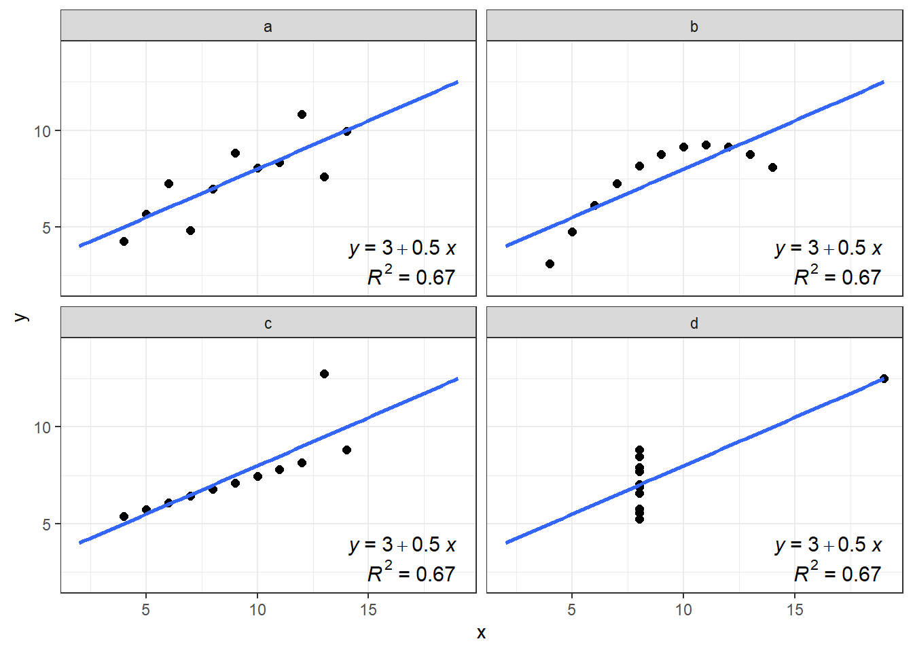

| x1 | x2 | x3 | x4 | y1 | y2 | y3 | y4 |
|---|---|---|---|---|---|---|---|
| 10 | 10 | 10 | 8 | 8.04 | 9.14 | 7.46 | 6.58 |
| 8 | 8 | 8 | 8 | 6.95 | 8.14 | 6.77 | 5.76 |
| 13 | 13 | 13 | 8 | 7.58 | 8.74 | 12.74 | 7.71 |
| 9 | 9 | 9 | 8 | 8.81 | 8.77 | 7.11 | 8.84 |
| 11 | 11 | 11 | 8 | 8.33 | 9.26 | 7.81 | 8.47 |
| 14 | 14 | 14 | 8 | 9.96 | 8.10 | 8.84 | 7.04 |
| 6 | 6 | 6 | 8 | 7.24 | 6.13 | 6.08 | 5.25 |
| 4 | 4 | 4 | 19 | 4.26 | 3.10 | 5.39 | 12.50 |
| 12 | 12 | 12 | 8 | 10.84 | 9.13 | 8.15 | 5.56 |
| 7 | 7 | 7 | 8 | 4.82 | 7.26 | 6.42 | 7.91 |
| 5 | 5 | 5 | 8 | 5.68 | 4.74 | 5.73 | 6.89 |
Summary
In this lab you will learn how to:
- explore data using boxplots, dotchart and scatterplots,
- effectively visualise data for multiple groups,
- manipulate plot elements and export plots in high quality.
Why data exploration?
Questions to consider
- Why is it recommended and very important to perform data exploration before starting any statistical analysis?
- What are the most common issues, that you can encounter in your biological datasets (referring to Zuur et al., 2010)?
Anscombe quartet
An example dataset that shows the importance of visual data exploration is the famous Anscombe’s quartet, comprised of four data sets that have nearly identical descriptive statistics, yet are very different. Each dataset consists of eleven (x, y) points that were constructed by the statistician Francis Anscombe to demonstrate both the importance of graphing data before analyzing it and the effect of outliers and other influential observations on statistical properties. The dataset is available as built in dataset (can be loaded by data(anscombe) in a sligthly different format).
First we will visualize this datasets. As we are looking at the relationship between two numerical variables, we need to use points for representation in 2D space and split the data by the ID of a sample.

Task
How would you describe the relationship between x and y variable in each dataset? Is the relationships between x & y the same among the datasets?
Lets look at the summaries of the x and y variables divided by each ID value:
- the mean value and variance of x,
- the mean value and variance of y and
- correlation between x and y.
| ID | mean_x | var_x | mean_y | var_y | correlation |
|---|---|---|---|---|---|
| a | 9 | 11 | 7.500909 | 4.127269 | 0.8164205 |
| b | 9 | 11 | 7.500909 | 4.127629 | 0.8162365 |
| c | 9 | 11 | 7.500000 | 4.122620 | 0.8162867 |
| d | 9 | 11 | 7.500909 | 4.123249 | 0.8165214 |
Properties of the four dataset are almost identical, right? The differences start on the third decimal of variance and correlation factor.
Similar to the statistical properties of x and y, the results of the linear regression are the same for all 4 datasets:

Questions to consider
- Is there an actual linear relationship between x and y? In which dataset?
Import iris dataset
Task
Start the RStudio from the R project icon that you created in the previous lab!
To be sure that the working directory is set to your project folder, use the get getwd() function. The result should end with .../My first R project (if you followed the instructions in the second lab).
getwd()Import the dataset, assign it to an object called iris and inspect that it was loaded correctly:
iris <- read.csv(file = "01_data/iris.csv")
head(iris) Sepal_Length Sepal_Width Petal_Length Petal_Width Species
1 5.1 3.5 1.4 0.2 setosa
2 4.9 3.0 1.4 0.2 setosa
3 4.7 3.2 1.3 0.2 setosa
4 4.6 3.1 1.5 0.2 setosa
5 5.0 3.6 1.4 0.2 setosa
6 5.4 3.9 1.7 0.4 setosastr(iris)'data.frame': 150 obs. of 5 variables:
$ Sepal_Length: num 5.1 4.9 4.7 4.6 5 5.4 4.6 5 4.4 4.9 ...
$ Sepal_Width : num 3.5 3 3.2 3.1 3.6 3.9 3.4 3.4 2.9 3.1 ...
$ Petal_Length: num 1.4 1.4 1.3 1.5 1.4 1.7 1.4 1.5 1.4 1.5 ...
$ Petal_Width : num 0.2 0.2 0.2 0.2 0.2 0.4 0.3 0.2 0.2 0.1 ...
$ Species : chr "setosa" "setosa" "setosa" "setosa" ...We will take one additional step in data preparation. In the first lab you were introduced to vector types. If we take a look at the column Species, You will see that it is treated as a character.
class(iris$Species)[1] "character"Some functions we will use today, require however, the character data to be treated asfactors. The values itself do not change, but R treats them differently. We will thus create a new column (for the sake of demonstration), named Species_f, with f remembering us that this is a factor. The function that will convert values from character to factor isas.factor():
iris$Species_f <- as.factor(iris$Species)
head(iris) Sepal_Length Sepal_Width Petal_Length Petal_Width Species Species_f
1 5.1 3.5 1.4 0.2 setosa setosa
2 4.9 3.0 1.4 0.2 setosa setosa
3 4.7 3.2 1.3 0.2 setosa setosa
4 4.6 3.1 1.5 0.2 setosa setosa
5 5.0 3.6 1.4 0.2 setosa setosa
6 5.4 3.9 1.7 0.4 setosa setosaclass(iris$Species_f)[1] "factor"Graphical data exploration
Boxplots & dotcharts
We will start with visualising iris data. We will take a look at how to create a boxplot and Cleveland dotplot (Zuur, Ieno & Elphich, 2010, Step 1). A boxplot divides data based on its 25th and 75th quantiles (the box), and further on the upper and lower range of 1.5 * Inter Quantile Range (upper and lower whisker) and “outliers” - values that are outside these range (solid dots).
We will use package ggplot2 to create and design our boxplots. First we need to install it install.packages("ggplot2") - and than load it to make its functionality available to use - library(ggplot2).
install.packages("ggplot2")
library(ggplot2)The basic function to create any plot is ggplot() which contains two arguments we need to define: data and aes(). For data we specify the object in which information for our plot is stored, in our case this will be iris. In aes() argument we can set many different arguments, for us at this point the y and x are important, as with them we specify which column or variable we want to use as y and/or x axis of our plot. The aes() is a shortened version of aesthetics, meaning that with it we define visual characterics of our plots.
A second function we add to ggplot() is a type of a plot we want to make, in our case this will geom_boxplot(), that initially does not require any arguments and which we add with a + sign.
First we will create a boxplot for all values of Sepal_Length column in iris dataframe. We will define data = iris and aes(y = Sepal_Length) followed by the + sign. We continue in the next row and add geom_boxplot() with empty brackets.
ggplot(data = iris, # which data object we will plot
# which variable will be displayed on y - axis
aes(y = Sepal_Length)) +
# what type of a plot we will create
geom_boxplot() Cleveland dotplot plots the row number of an observation againts the observation value, and provide more detailed information than a boxplot. Points that stick out on the right-hand side, or on the left-hand side, are observed values that are considerably larger, or smaller, than the majority of the observations, and require further investigation.
Cleveland dotplot is a part of base R and it is created by using the dotchart() function. It takes one mandatory argument, the data we want to plot, and two additional arguments, with which we give names to x and y axis (xlab and ylab):
dotchart(iris$Sepal_Length,
xlab = "Sepal length (cm)", # this is the name of x axis
ylab = "Order of the data") #this is the name of y axisNext, we know that we have data for three species. So in the next boxplot, we will display data separately for each group. We do this by adding x = Species_f inside aes():
ggplot(data = iris,
# adding variable that will be displayed on x - axis
aes(x = Species_f, y = Sepal_Length)) +
geom_boxplot() 
For Cleveland dotplot, we include argument groups = iris$Species_f, to display data separately for the three groups:
dotchart(iris$Sepal_Length,
groups = iris$Species_f,
xlab = "Sepal length (cm)", # this is the name of x axis
ylab = "Order of the data") #this is the name of y axis
Questions to consider
Take a look at the boxplot and dotplot, where data is grouped by species.
- Can you observe any patterns?
- What about the differences between the three species?
Scatterplots
We are often interested in visualising two numerical variables, to inspect if there are any patterns within the data (similar to our introductory Anscombe example). We call this a scatterplot, and we will plot Sepal_Length on the x axis and Sepal_Width on the y axis. The initial call to ggplot stays the same, while this time we use geom_point() to add points to our plot:
ggplot(iris, aes(x = Sepal_Length, y = Sepal_Width)) +
geom_point()As before, we can extend this to incorporate the information about the species. One option is to use the color = argument within the aes() function. This will automatically give each species a predefined color and will display the legend on the side.
ggplot(iris, aes(x = Sepal_Length, y = Sepal_Width, color = Species_f)) +
geom_point() 
In case that observations are overlapping by a large degree, we can use faceting to divide plots by each species. For this we need to add the facet_wrap() function, where ~ Species_f denotes that species is the variable by which R should divide the data:
ggplot(iris, aes(x = Sepal_Length, y = Sepal_Width)) +
geom_point() +
facet_wrap(~ Species_f)
Note
By default, facets have the same values on the x and y axis. The good thing is, that this makes it easy to compare the three groups (species). On the other hand, in each facet, there is a lot of white (empty) space.
Changing plot elements and design
We will continue with just a bit of “polishing” to make plots more suitable for scientific/professional publications (including your masters thesis). We will extend the scatter plot, where the iris species were denoted by color. Remember, to add another commands to ggplots we simply continue the last line with the + sign.
First we will change the annotation of x and y - axis with xlab() and ylab() functions. Inside the brackets we will define the name of the axis - "Fish length (cm)". Remember that character strings must be included in quotations "". As our variable is continuous number that cannot be lower than zero, we will set the begging of the y axis at 0. We do this by setting the limits of the axis with ylim():
ggplot(iris, aes(x = Sepal_Length,
y = Sepal_Width,
color = Species_f)) +
geom_point() +
ylab("Sepal Length (cm)") +
xlab("Sepal Width (cm)")Legend title
ggplot(iris, aes(x = Sepal_Length,
y = Sepal_Width,
color = Species_f)) +
geom_point() +
ylab("Sepal Length (cm)")+
xlab("Sepal Width (cm)") +
labs(color = "Species")The last thing we will change today will be the design of plot elements. We can do that manually, but there are already several themes prepared (including some specific R packages, such as ggthemes - more info here or here. To us, theme_bw() and theme_classic() are of interest.
We use the same commands to create the boxplot, we add the + sign, continue in the next row and add theme_bw() with empty brackets.
ggplot(iris, aes(x = Sepal_Length,
y = Sepal_Width,
color = Species_f)) +
geom_point() +
ylab("Sepal Length (cm)")+
xlab("Sepal Width (cm)") +
labs(color = "Species") +
theme_bw()We repeat the proccess and this time add theme_classic() with empty brackets.
ggplot(iris, aes(x = Sepal_Length,
y = Sepal_Width,
color = Species_f)) +
geom_point() +
ylab("Sepal Length (cm)")+
xlab("Sepal Width (cm)") +
labs(color = "Species") +
theme_classic()
Questions
Are there any other things you would like to modify (for example change the size of the points)?
If you have any suggestions, we can try to add them before exporting the plot!
Lets also take a look at how we can export this boxplot in high resolution print quality. First we save our plot to an object, lets call it plot_to_export. Then, we install, if needed, and load the ggpubr package, from which we use ggexport function. Within it, we will define 4 arguments:filename =, width =, height and res, which is an abbreviation for resolution (300 is a minimum requirement for quality print):
plot_to_export <-
ggplot(iris, aes(x = Sepal_Length,
y = Sepal_Width,
color = Species_f)) +
geom_point() +
ylab("Sepal Length (cm)")+
xlab("Sepal Width (cm)") +
labs(color = "Species") +
theme_classic()
# load required package
install.packages("ggpubr")
library(ggpubr)
# we need to set width, height and res manually,
# usually change the numbers several times to get what we want
ggexport(plot_to_export,
filename = "iris_scatter.png",
width = 2400,
height = 1800,
res=300)Exercises
Task
Read the instructions carefully. If you don’t understand something or something doesn’t work straight away, first think about the problem/error, consult the materials in front of you, than google, than the neighbor on your left and on your right. If after all that you still don’t know how to fix the problem or proceed, than ask me for help!
1.1) Import the penguins dataset and check if the file was correctly imported (344 observations, 8 variables), adjust the code if needed.
1.2) Create new columns in which species, island and sex will be treated as factors by R.
1.3) Create a boxplot which will display values of body mass separately for each species.
1.4) Create a dotchart which will display values of flipper length for each species.
1.5.1) Create a scatter plot which will display bill lengths in relationship to bill depths with species denoted by different colors.
1.5.2) Rename x and y axis to Bill Length (mm) and Bill Depth (mm), and legend title to Species.
1.5.3) Change the plot theme to either theme_bw() or theme_classic().
1.5.4) Export the plot to your computer in high resolution and save it as penguins_scatter.png.
Expected outputs of the exercises shown below:
Question
Did you get the following warnings after running the ggplot commands?
Removed 2 rows containing non-finite values (stat_boxplot()). Removed 2 rows containing missing values (geom_point()).
What do they mean?
Task
2.1) Import the dataset you downloaded from the internet in the previous lab.
2.2) Create new columns in which character data will be treated as factors by R.
2.3) Choose one numerical variable and create a boxplot. Divide that boxplot by different groups if it makes sense. change the names of axis titles and change the default theme.
2.4) Choose one numerical variable and create a dotchart. Divide that dotchart by different groups if it makes sense.
2.5) If there are two numerical columns in you data, create a scatter plot. Color points according to different groups if it makes sense, change the names of axis titles and change the default theme.
Until the end of the class or homework
Mandatory reading before next class
(on e-classroom)
Dytham, 2011, Choosing and using statistics for biologists:
Chapter 5: Statistics, variables and distributions Chapter 6: Descriptive and presentational techniques